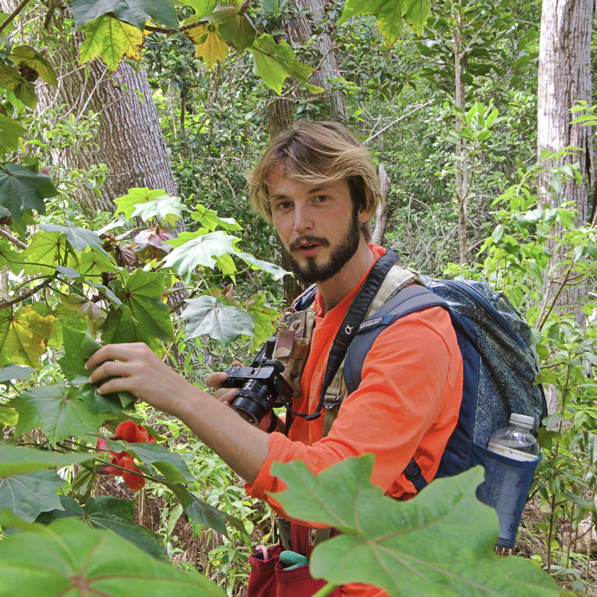
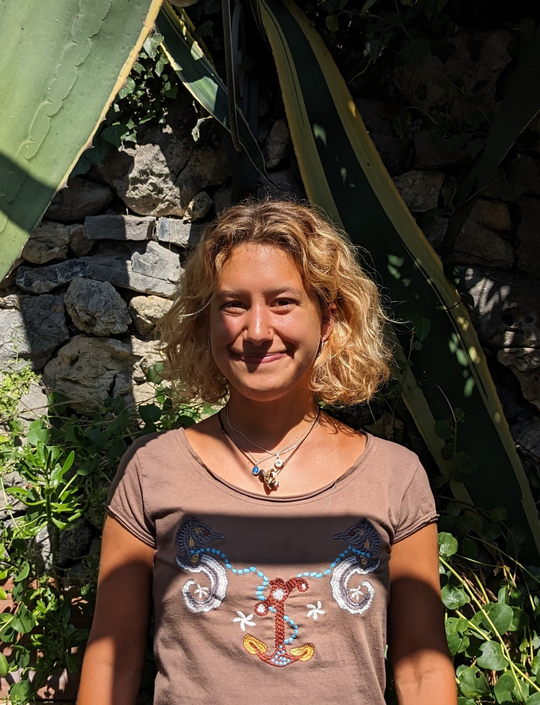
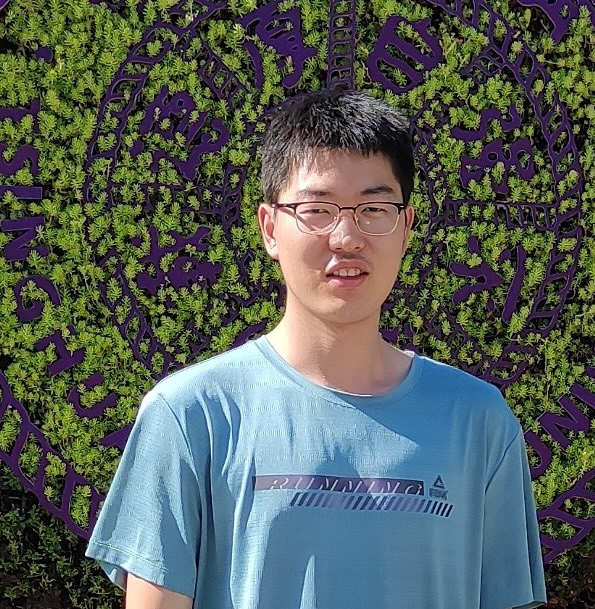
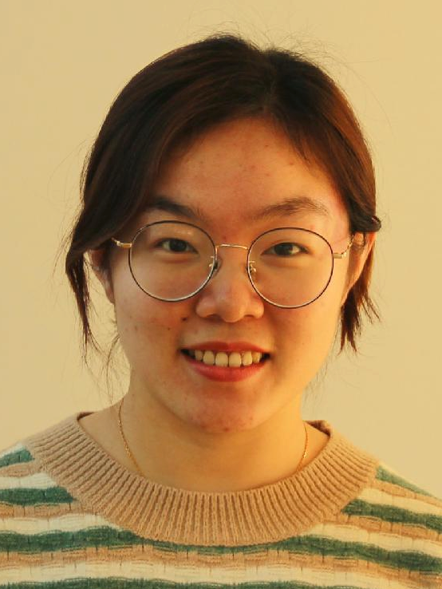
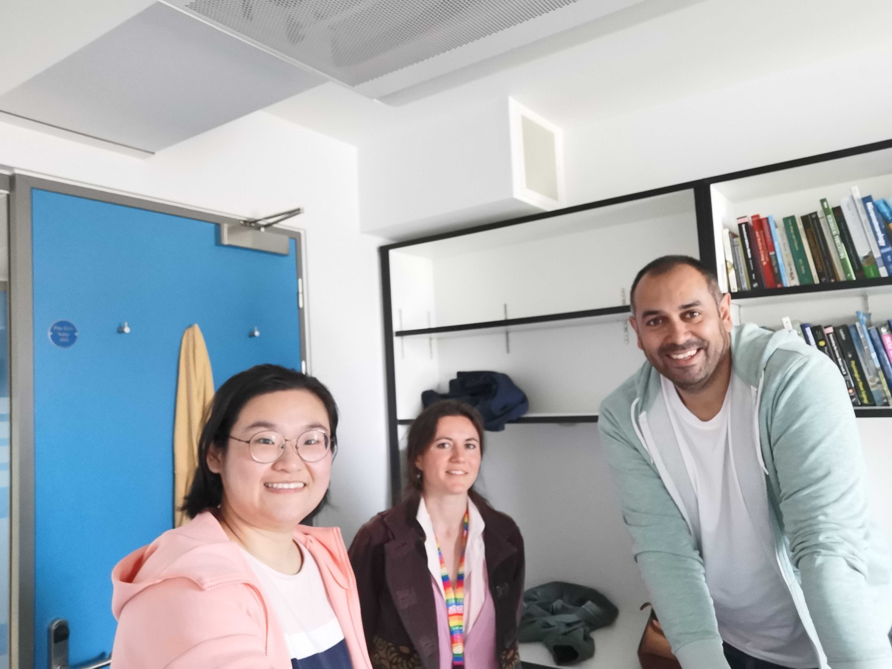

Martin De Kauwe is Professor of Global Change Ecology at the University of Bristol.
Martin is a member of the Scientific Steering Committee for the AmazonFACE experiment and part of the senior management team for JULES (the UK land surface model) under the Joint Land Modelling Programme (JLMP). Additionally, Martin previously co-chaired the leadership committee for CABLE, Australia's land surface model. Finally, Martin is an Associate Editor at New Phytologist.
Research Positions
2021–present: Professor, School of Biological Sciences, University of Bristol, England
2017–2021: Senior Lecturer, Climate Change Research Centre, University of New South Wales, Australia
2010–2017: Research Fellow, Department of Biological Sciences, Macquarie University, Australia
2008–2010: Land Surface Modeller, Centre for Ecology and Hydrology, England
Research group

Ross Upton is an MRes student at the University of Bristol. Ross’s master’s degree will investigate opportunities for developing climate-resilient afforestation schemes.

Julia Madurini Hall is a PhD student at the University of Bristol in the Selva lab . Julia’s PhD will use manipulative experiments to advance our understanding of how tress respond to drought and heat stress.
Thamali Kariyawasam Idippilige is a PhD student at the University of Bristol. Thamali’s PhD is investigating water-use efficiency and drought tolerance in Sri Lankan tea cultivars.
Thamali’s PhD scholarship is a partnership between Bristol, the Royal Botanic Gardens, Kew, the University of Peradeniya in Sri Lanka, and the Tea Research Institute of Sri Lanka, with funding from Ahmad Tea.
Cale Baguley is a Postdoctoral Researcher at the University of Bristol.
Cale is working on our UK Natural Environment Research Council (NERC) grant to characterise the timescale, spatial extent, and mechanisms that govern the ecosystem legacy to drought and heatwaves during European summers.
Alumni

Ziqi Zhu, visiting PhD student from Tsinghua Univerisity. Ziqi is applying eco-evolutionary optimality principles to understand trends in seasonal dynamics in leaf growth.
Ying Hu, visiting PhD student from the Research Center for Eco-environmental Sciences, Chinese Academy of Sciences. Ying is exploring the impact of climate change on Chinese terrestrial ecosystems.

Melika Missen, PhD student, Thesis: Will rising CO2 concentrations save plants from drought stress?
Melika has just passed her PhD!

Jonathan Page, PhD student, Thesis: Lags and legacies: understanding the role of antecedent effects on grassland biomass responses to rising CO2 . Jon recieved the Dean’s Award for an outstanding PhD thesis.
John is now working as a postdoc at the University of New South Wales.
Gabriel Banstarck Marandola, visiting master’s student from the State University of Campinas. Gabriel completed his MSc in Ecology in 2024.
Gabriel’s thesis evaluated the effects of elevated CO2 on the physiology of understory species in Central Amazonia.

Chunhui Zhan, visiting PhD student from the Max Planck Institute for Biochemistry.
Chunhui is examining the role of rising carbon dioxide on land-atmosphere interactions.

Lina Teckentrup, PhD student, Thesis: The Future of Terrestrial Carbon in Australia
Lina is now working as a research scientist at the Barcelona Supercomputer Center.

Mengyuan Mu, PhD student, Thesis: How important is groundwater to the resilience of vegetation during drought?
Mengyuan is now working as a Postdoc at the University of New South Wales.

Manon Sabot, PhD student Thesis: Trading water for carbon in a changing climate: Can optimality theory improve the predictability of land surface models? Manon recieved the Dean’s Award for an outstanding PhD thesis.
Following her PhD, Manon worked as a Postdoctoral Researcher on our ARC grant exploring how vulnerable eucalypts are to future drought. Manon is a Minerva Fast Track fellow and group leader at the Max Planck Institute for Biogeochemistry.

Sami Rifai, Postdoctoral Researcher on the ARC Discovery: “How vulnerable are eucalypts to future droughts?”
Sami now a lecturer in the School of Biological Sciences at the University of Adelaide.

Jinyan (Jim) Yang, PhD student, Thesis: Modelling the carbon uptake of Australian evergreen ecosystems under rising [CO2] and water limitations
Jim is now working as a Postdoc at CSIRO Environment.

Ned Haughton, PhD student, Thesis: On the predictability of land surface fluxes
Ned is now working as a risk analyst at Climate Risk.
Mini reunion in Bristol, 2022
